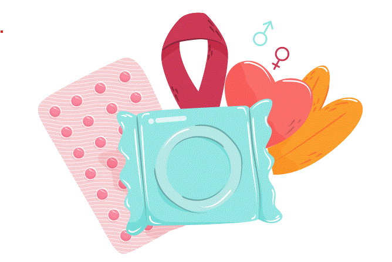

Sexual and Reproductive Health and Rights (SRHR) emcompass a fundamental set of human rights related to sexuality, reproduction and well beingPlay AudioLearn More

Helpful TopicClick on the Card or Learn More Button to see more about the topic of your choice.Human Body and AnatomyContraception, also known as birth control, encompasses a range of methods and techniques designed to prevent pregnancy. It allows individuals and couples to have cont...
Learn MoreHuman Body and AnatomyContraception, also known as birth control, encompasses a range of methods and techniques designed to prevent pregnancy. It allows individuals and couples to have cont...
Learn MoreGender, Sex and sexualityContraception, also known as birth control, encompasses a range of methods and techniques designed to prevent pregnancy. It allows individuals and couples to have cont...
Learn MoreContraceptionContraception, also known as birth control, encompasses a range of methods and techniques designed to prevent pregnancy. It allows individuals and couples to have cont...
Learn MorePregnancyContraception, also known as birth control, encompasses a range of methods and techniques designed to prevent pregnancy. It allows individuals and couples to have cont...
Learn MoreSafe AbortionContraception, also known as birth control, encompasses a range of methods and techniques designed to prevent pregnancy. It allows individuals and couples to have cont...
Learn MoreGender Based ViolenceContraception, also known as birth control, encompasses a range of methods and techniques designed to prevent pregnancy. It allows individuals and couples to have cont...
Learn MoreHIV And STIsContraception, also known as birth control, encompasses a range of methods and techniques designed to prevent pregnancy. It allows individuals and couples to have cont...
Learn MoreHarmful PracticesContraception, also known as birth control, encompasses a range of methods and techniques designed to prevent pregnancy. It allows individuals and couples to have cont...
Learn MoreLaws In SRHR In NepalContraception, also known as birth control, encompasses a range of methods and techniques designed to prevent pregnancy. It allows individuals and couples to have cont...
Learn More.
Resources CategoryClick on the Card to see the topics related to the selected category.6Mental Health6Sexual and Reproductive Health and Rights10Mental Health6Mental HealthPopular ResourcesClick on the Card to see more about the topic of your choice.AudioDisability VisibilityBook by Alice Wong is an essential anthology from blog posts, manifestos, and eulogies to Congressional testimonies, and more providing a gli...
AudioDisability VisibilityBook by Alice Wong is an essential anthology from blog posts, manifestos, and eulogies to Congressional testimonies, and more providing a gli...
AudioDisability VisibilityBook by Alice Wong is an essential anthology from blog posts, manifestos, and eulogies to Congressional testimonies, and more providing a gli...
Nearest HospitalsClick on the Card to see more about the topic of your choice.Teaching HospitalMaharajung Rd, kathmandu, 445600Get locationTeaching HospitalMaharajung Rd, kathmandu, 445600Get locationTeaching HospitalMaharajung Rd, kathmandu, 445600Get locationGET DISABILITY INFO PLATFORM ON YOUR PHONEUnlock a world of knowledge at your fingertips! Download our Resource Library app today and access a treasure trove of valuable information anytime, anywhere.Download Now